Картофель по-деревенски
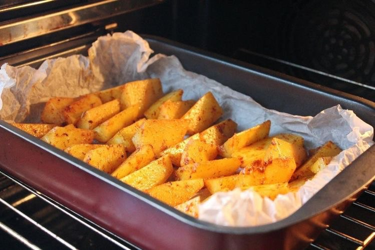Пикантный нут
Кус-кус
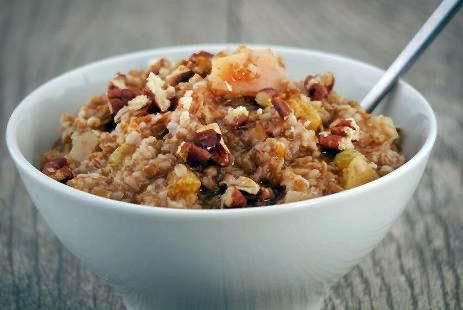Картофель-фри
Тушенная капуста с рисом
Овощное рагу
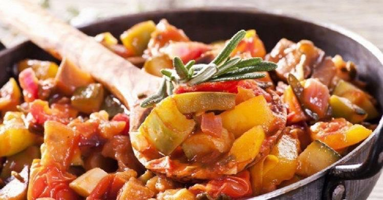Пряная тыква
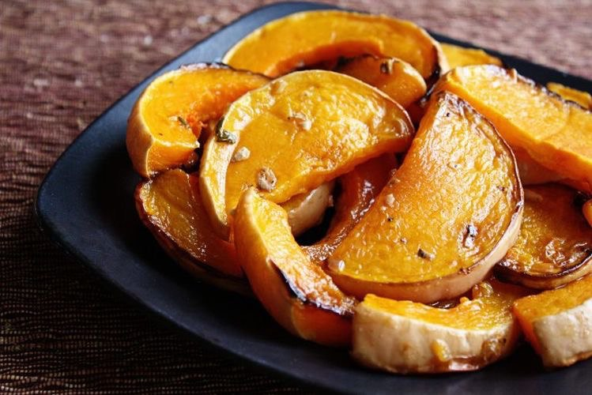Рис с овощами
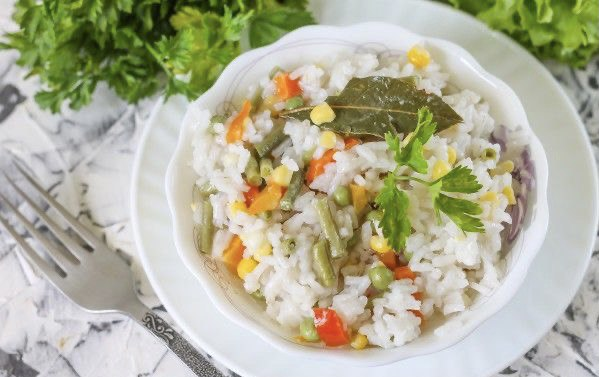Кабачки в белом соусе
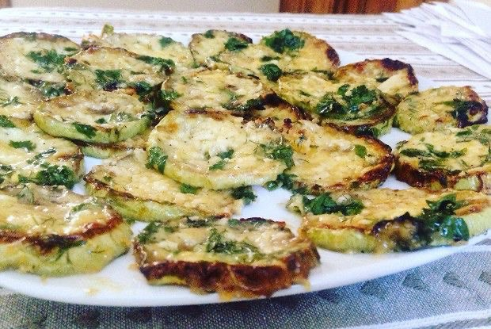Картофельный гратен
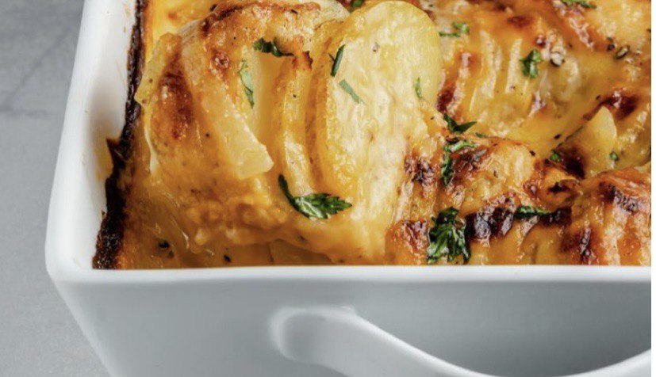Ингредиенты к рецепту:
картофель - сколько вы захотите
растительное масло - 2-3 ст. л.
чеснок несколько зубчиков
соль, перец, приправа - по вкусу
Приготовление блюда по рецепту:
Шаг 1. Очищенный картофель разрезать вдоль на 4-8 частей.
Шаг 2. Добавить растительное масло, соль, перец, приправу, чеснок. Хорошо перемешать, чтобы каждому кусочку досталось.
Шаг 3. Выложить на противень каждый кусочек отдельно. Поставить в разогретую до 180°C духовку. Через 30 мин. повысить температуру до 200°C минут на 10.
Ингредиенты к рецепту:
500 г крупного сухого гороха нут
0,5 стакана оливкового масла
1 ст. л. сладкой молотой паприки
1 ч. л. молотой зиры
0,5 ч. л. молотого кориандра
cоль по вкусу
Приготовление блюда по рецепту:
Шаг 1. Замочите нут в холодной воде на 12–24 ч. За это время пару раз поменяйте воду. Затем откиньте нут на сито, положите в большую кастрюлю, залейте свежей холодной водой, доведите до кипения, снимите пену, варите до мягкости, 1–2 ч.
Шаг 2. Готовый нут откиньте на сито, промойте и обсушите. Смешайте в большой миске все специи, соль и оливковое масло.
Шаг 3. Разогрейте духовку до 200 °С. Смешайте нут с пряным маслом, чтобы каждая горошина была им покрыта. Выложите на застеленный пергаментом противень и жарьте в духовке, помешивая, 10 мин.
Ингредиенты к рецепту:
2 стакана «среднего» кускуса
3 больших апельсина
10 сушеных фиников
большая горсть темного изюма
большая горсть сырого миндаля
1 палочка корицы
оливковое масло
соль по вкусу
Приготовление блюда по рецепту:
Шаг 1. У фиников удалите косточки, мякоть нарежьте небольшими кусочками. Миндаль крупно порубите. Залейте финики, изюм и орехи большим количеством кипятка, оставьте на 20 мин., откиньте на дуршлаг, обсушите.
Шаг 2. Палочку корицы прогрейте над огнем, держа щипцами, и разломайте на несколько частей. Примерно 1/4 растолките в ступке как можно мельче.
Шаг 3. Апельсины вымойте щеткой. С 1 апельсина снимите несколько полосок цедры. Из всех апельсинов выжмите сок. Долейте в сок столько воды, сколько нужно для приготовления кускуса, положите целые кусочки корицы и соль, доведите до кипения – и приготовьте кускус согласно инструкции на упаковке.
Шаг 4. Фрукты, орехи и нарезанную небольшими кусочками цедру положите на большую сковороду, сбрызните оливковым маслом и обжарьте на среднем огне, помешивая, 10 мин. Добавьте кускус (предварительно удалив кусочки корицы),перемешайте, посыпьте растолченной корицей и подавайте горячим.
Ингредиенты к рецепту:
1 кг картофеля для жарения
растительное масло для фритюра
морская соль среднего помола
Приготовление блюда по рецепту:
Шаг 1. Очистите картофель от кожуры. Срежьте округлые части со всех сторон так, чтобы у вас получился прямоугольный брусок. Нарежьте его вдоль пластинами толщиной 1 см, каждую пластину – на брусочки толщиной 1 см.
Шаг 2. Промойте нарезанный картофель в холодной воде и положите в кастрюлю с подсоленной кипящей водой (воды должно быть много, чтобы картофель в ней лежал свободно). Доведите воду до кипения на среднем огне. Убавьте огонь до минимального и варите картофель 2 мин. Откиньте его на дуршлаг и дайте обсохнуть и остыть, 20–30 мин. Все это нужно для того, чтобы избавиться от лишнего крахмала.
Шаг 3. Остывший картофель разложите на подносе и уберите в морозильник на 20–30 мин. Это нужно, чтобы на картофеле во время жарки сразу же образовалась хрустящая корочка.
Шаг 4. Пока картофель лежит в морозильнике, подготовьте глубокую широкую кастрюлю (или сковороду, или вок) с толстым дном для фритюра. Налейте туда масло – должен получиться слой глубиной не меньше 8–10 см. Чем больше масла, тем большие порции картофеля можно закладывать.
Шаг 5. Поставьте кастрюлю на средне-сильный огонь и разогрейте масло до 190 °С. Если у вас нет термометра, держите наготове несколько кубиков белого хлеба со стороной 1 см. Если брошенный в горячее масло кубик поджаривается до золотистого цвета за 30 сек., значит, масло готово.
Шаг 6. Порциями, аккуратно, шумовкой выкладывайте подмороженный картофель в масло и обжаривайте до красивой золотистой корочки со всех сторон, примерно 6 мин. Чтобы сохранить уже готовый картофель теплым, выкладывайте его сначала на 1 мин. на бумажные полотенца, чтобы стек лишний жир, а потом на блюдо или противень, стоящий в разогретой до 80–100 °С духовке.
Ингредиенты к рецепту:
500 г белокочанной капусты
2 стакана воды
1 стакан риса
100 мл томатного сока или воды, разведенной с томатной пастой
1 луковица
1 морковь
соль, перец
растительное масло
Приготовление блюда по рецепту:
Шаг 1. Лук мелко нарезаем и обжариваем в казанке или сковороде на среднем огне с добавлением растительного масла до прозрачности, иногда помешивая.
Шаг 2. К обжаренному луку добавляем измельченную морковь и обжариваем около 5 минут, перемешивая.
Шаг 3. Капусту шинкуем и слегка приминаем руками, добавляем к луку и моркови, перемешиваем и тушим до готовности капусты, около 20 минут (крышкой не накрываем). Во время приготовления солим и перчим овощи по вкусу.
Шаг 4. К готовым овощам вливаем томатный сок и перемешиваем.
Шаг 5. Затем добавляем к тушеной капусте с овощами рис, вливает два стакана воды, доводим все до кипения и варим на среднем огне под закрытой крышкой до готовности нашего риса.
Ингредиенты к рецепту:
капуста белокочанная - 900 г
картофель - 500-600 г
лук репчатый - 1 шт.
морковь - 1 шт.
кабачок (можно готовить с замороженными кабачками) - 1 шт.
баклажан (можно готовить с замороженными баклажанами) - 1 шт.
растительное масло для жарки
томатный сок - 150 мл
вода - 50 мл
соль - по вкусу
чёрный перец горошком - 3-4 шт.
лавровый лист - 2-3 шт.
зелень - по желанию
Приготовление блюда по рецепту:
Шаг 1. Если вы будете добавлять в рагу замороженные овощи, предварительно размораживать их не нужно. Лук и морковь очистить и вымыть проточной водой. Лук нарезать кубиками, морковь натереть на средней тёрке. Отправить овощи в казан (можно взять толстостенную кастрюлю или сковороду) и обжарить на растительном масле в течение 5 минут, периодически помешивая.
Шаг 2. Овощи должны стать мягкими и слегка подрумяниться.
Шаг 3. Капусту мелко нашинковать и отправить к луку и морковке. Потомить 3-4 минут на среднем огне, помешивая.
Шаг 4. Кабачок (если кабачок не молодой, шкурку лучше снять) и баклажан вымыть, нарезать небольшими кубиками, отправить в казан к остальным овощам.
Шаг 5. Следом за кабачком и баклажаном отправить в рагу картошку, очищенную и нарезанную средними кубиками.
Шаг 6. К овощам добавить соль, чёрный перец горошком и лавровый лист, влить томатный сок и воду, перемешать.
Шаг 7. Тушить овощное рагу под крышкой на самом слабом огне минут 45, периодически помешивая.
Шаг 8. В готовое рагу, по желанию, можно добавить измельчённую зелень. Снять рагу с огня и дать настоятся под закрытой крышкой 5-7 минут.
Ингредиенты к рецепту:
тыква - 400-450 г
перец чёрный - 0,5 ч. л.
смесь перцев - 0,5 ч. л.
базилик - 0,5 ч. л.
томатная паста - 0,5 ст. л.
соль - 0,5 ч. л.
масло подсолнечное - 2 ст. л.
чеснок - 2 зубчика
вода - 25 мл
Приготовление блюда по рецепту:
Шаг 1. Нарезать очищенную тыкву крупными кубиками. В сковороде разогреть подсолнечное масло, выложить тыкву и обжарить на сильном огне до золотистой корочки со всех сторон.
Шаг 2. Затем к тыкве добавить чёрный перец, смесь перцев, соль, базилик и томатную пасту, перемешать, обжарить 1 минуту.
Шаг 3. Обжаренную тыкву переложить в форму для запекания, посыпать нарезанным кубиками чесноком, влить воду. Накрыть фольгой и поставить в разогретую до 180 градусов духовку.
Шаг 4. Запекать тыкву 20 минут.
Ингредиенты к рецепту:
рис пропаренный - 300 г (можно взять смесь с диким рисом)
грибы (например, свежие шампиньоны) - 300 г
лук репчатый - 1 шт.
морковь - 1 шт.
зелёный горошек - 100 г (можно замороженный)
фасоль стручковая - 100 г (можно замороженную)
кукуруза консервированная - 100 г
соль, специи - по вкусу
растительное масло для жарки
Приготовление блюда по рецепту:
Шаг 1. Подготовить продукты. Лук и морковь почистить. Грибы промыть под проточной водой.
Шаг 2. Рис сварить в соответствии с инструкцией на упаковке. Когда рис сварится, можете откинуть его на сито и дать стечь воде.
Шаг 3. Грибы крупно нарезать.
Шаг 4. В глубокую сковороду добавить растительное масло и поставить на огонь. Добавить грибы в сковороду и обжарить их в течение 15 минут, периодически помешивая.
Шаг 5. Лук нарезать мелкими кубиками.
Шаг 6. В отдельную сковороду влить растительное масло и добавить лук. Обжарить лук, иногда помешивая, до золотистого цвета.
Шаг 7. Морковь нарезать мелкими кубиками (можно натереть морковь на крупной тёрке).
Шаг 8. Добавить морковь к луку и перемешать. Обжарить овощи в течение 5-7 минут, иногда помешивая.
Шаг 9. Добавить обжаренные овощи в сковороду к грибам и хорошо перемешать.
Шаг 10. Затем добавить горошек и фасоль. Всё хорошо перемешать и обжарить в течение нескольких минут.
Шаг 11. Как только овощи обмякнут, можно добавлять кукурузу. Всё хорошо перемешать и обжарить в течение нескольких минут, не забывая иногда перемешивать.
Шаг 12. Затем добавить сваренный рис. Посолить и добавить специи по вкусу.
Шаг 13. Перемешать рис с овощами и грибами, подержать на огне в течение 5-7 минут, иногда перемешивая, затем накрыть крышкой и снять с огня. Дать гарниру настояться в течение 10 минут.
Ингредиенты к рецепту:
1 кг кабачков
200 г сливок
2-3 ст. л. муки
2-3 зубчика чеснока
укроп
соль, перец
растительное масло
Приготовление блюда по рецепту:
Шаг 1. Кабачки нарезаем средними кубиками, солим и присыпаем мукой. Мука должна полностью покрыть поверхность кабачков.
Шаг 2. Кабачки хорошенько обжариваем на сковороде с добавлением растительного масла. Обжариваем их до очень поджаристой корочки, почти как жареный картофель.
Шаг 3. Когда мы добились нужной корочки у кабачков, добавляем к ним сливки, выдавленный чеснок и черный молотый перец. Доводим массу до кипения и держим на огне 1-2 минуты, пока сливки не загустеют.
Шаг 4. В самом конце добавляем к кабачкам мелко рубленный укроп.
Ингредиенты к рецепту:
800 г картофеля (очищенный)
200-300 мл сливок (20-33 % жирности)
2 шт. лаврового листа
1 щепотка мускатного ореха (молотый)
2 зубчика чеснока
100 г пармезана (или грюер)
20 г сливочного масла
соль и перец по вкусу
Приготовление блюда по рецепту:
Шаг 1. Духовку разогрейте до 180 градусов.
Шаг 2. Картофель (800 г) почистите, помойте и нарежьте тонкими дольками ножом или при помощи миндалины.
Шаг 3. Лавровый лист и чеснок извлеките.
Шаг 4. Переложите половину картофель со сливками в форму для запекания и посыпьте сверху половиной тертого пармезана (50 г), затем выложите вторую половину картофеля, кусочек сливочного масла (20 г) и снова посыпьте оставшимся сыром (50 г). Запекайте в духовке в течение 30 минут. На поверхности гратена должна образоваться румяная корочка.
Yummy day
рецепты для всей семьи
Картофель по-деревенски
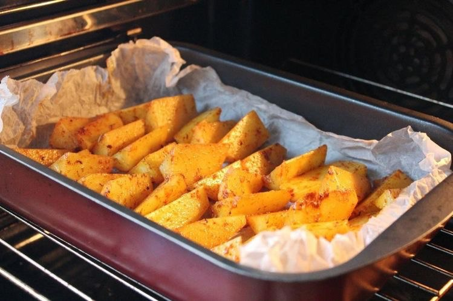Пикантный нут
Кус-кус
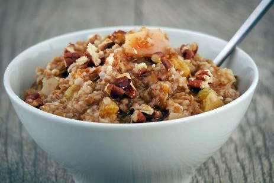Картофель-фри
Тушенная капуста с рисом
Овощное рагу
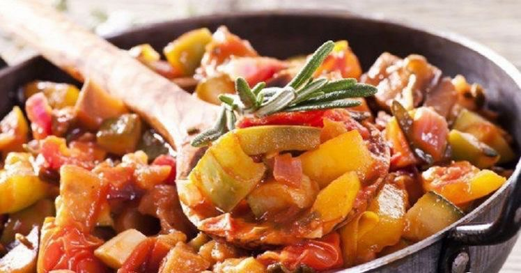Пряная тыква
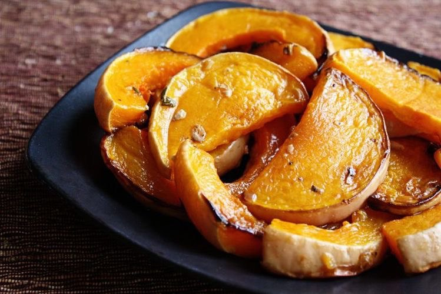Рис с овощами
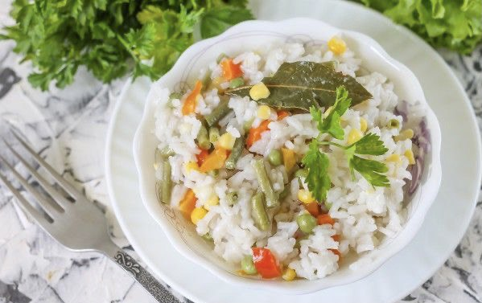Кабачки в белом соусе
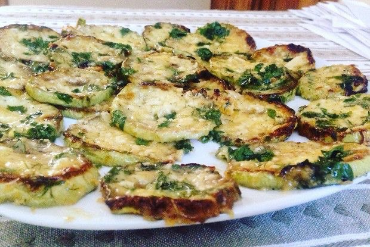Картофельный гратен
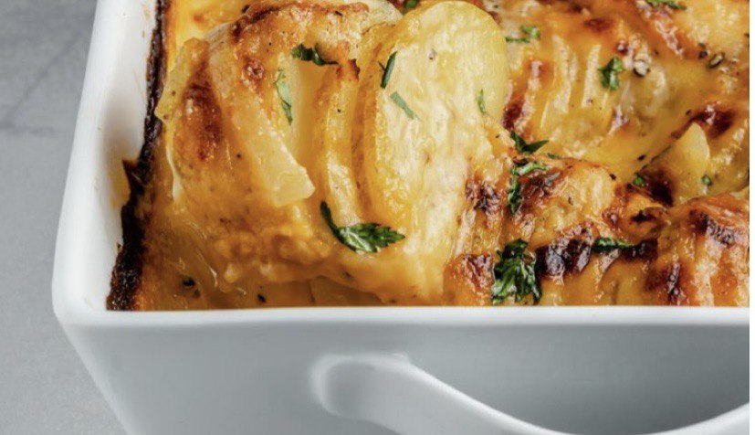P.S. With love to you